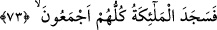

meydana gelmiş olup bu özelliği açısından -her ne kadar Allah Teâlâ “bizim de
kendisine ruhumuzdan üflediğimiz…” (et-Tahrîm 66/12) şeklinde buyuruyorsa da-
Îsâ’ya ruh üfleyenin Cibrîl (a.s.) olduğu söylenebilir.
Ayrıca Fakîr (Bursevî) der ki: Bana göre “ruh üflemek” demek, ruhu kendi mahallinde
ortaya çıkarmak demektir. Bu ızhar, üfleme fiili ile ifâde ediliyor, çünkü ruhun
kendisinde zuhur edişinden sonra beden kendisine üflenmiş, içi dolmuş ve yükselip
ayağa kalkmış bir varlığa benziyor. Baksanıza ruhu bedenini terkeden bir ölü nasıl kütük
gibi devriliveriyor. Bununla ilgili bir başka remiz daha vardır ki bu Hicr Sûresi’nde
geçmişti. Bir diğer husus, ruhun Allah’a izâfe edilmiş olması Âdem’in ruhunun
meleklerin ve diğer varlıkların ruhundan önce bulunduğuna işârettir. Çünkü Kadîm’e
izâfe edilen de kadimdir. Her ne kadar bazı varlıkların cesedleri ondan önce gelmiş ise
de bu böyledir.
Halifelik makamına lâyık olması sebebiyle “derhal ona secdeye kapanın!”
(__WORD__) ifâdesi, (__WORD__) fiilinden emir sîğası olup “kapanın” anlamındadır. Diğer bir
anlam, “o halde onun üzerine (veya karşısında) düşün” şeklindedir. Bu fiilin kullanılmış
olmasında verilen emirden -bazılarının dediği gibi- sadece bir eğilme mânâsı
kasdedilmediğine dâir delil vardır. Aynı delil (__WORD__) ifâdesinde de vardır. Çünkü
secdenin hakîkî anlamı yüzü yere koymaktır. Bu secde, bir değer veriş ve selamlama
ifâdesidir. Çünkü kulluk etme tarzında bir secde, ne bu ümmette ne de daha önceki
ümmetlerde Allah dışındaki hiçbir varlığa yapılması mümkün olmayan bir şeydir.
Önceleri ileri gelenlere selamlama yollu secde yaygın olmasına rağmen İslâm bunu iptal
etmiştir.
73. Bütün melekler toptan secde ettiler.
Allah Teâlâ, Âdem’e bir sûret verip şeklini düzenledikten sonra ona ruh üfleyince
O’nun halifesi olarak “bütün melekler toptan” ona “secde ettiler.” Çünkü Allah ona
tecellî etmiş ve heybeti tüm melekleri kaplamış bulunuyordu. Onun için hemen secde
ettiler. İlk secde eden İsrâfil idi. Bu davranışı sâyesinde, Levh-i Mahfuz’la ilgilenme
görevi kendisine verilerek mükâfatlandırıldı. Bunlar, Süheylî’nin en-Nakkaş’tan naklen
verdiği bilgilerdir.
Secde etmeyen bir melek bile kalmamak şartıyla tamâmı beraberce yâni hiçbiri bir
diğerinden geri kalmamış olarak birlikte secde ettiler. Bu mânâ, mutlaka hal yapılarak
ifâde edilecek diye bir şey yoktur, böyle bir te’kid de aynı mânâyı verebilir.
Melekler Hakk’ın nurlarını onda gördükleri zaman,
Secdeye eğildiler ve hizmete koştular.